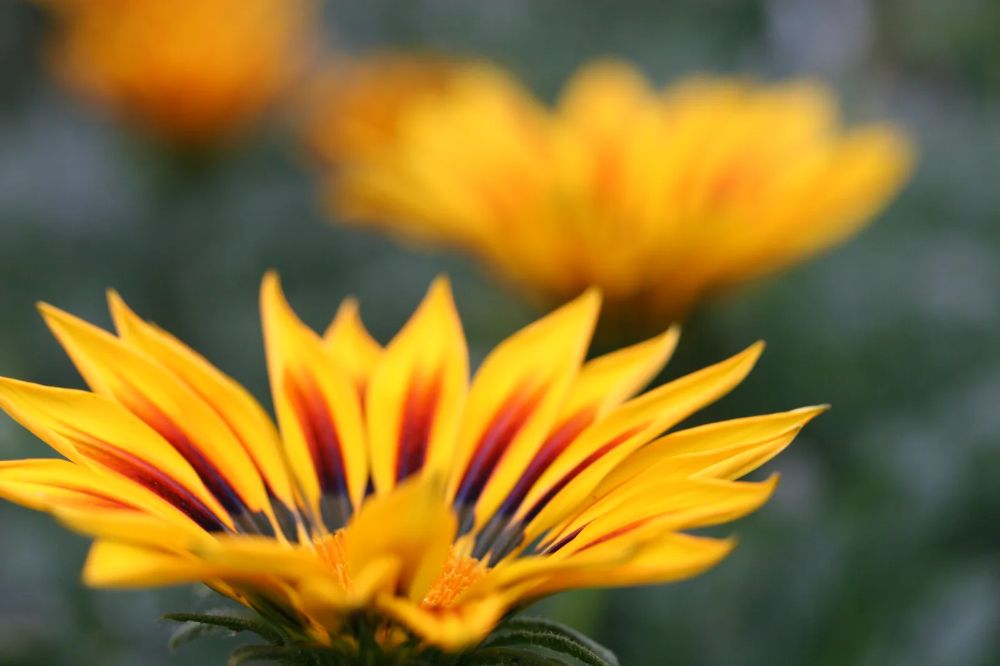
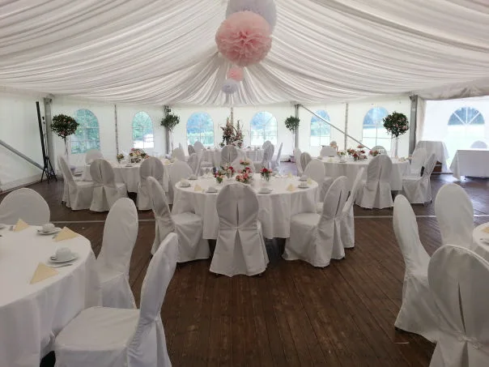

Blumen Bierbach · Schwäbisch Hall
Ein bisschen
Natur.
So viel Gefühl.
Blumen für die kleinen Gesten.
Und die großen Momente im Leben.
Mit Liebe von Hand gestaltet.

Kleine Gesten. Große Gefühle.
Was möchten Sie sagen?
Unsere Blumenwelt
Für jeden Anlass.
Mit Ihrem Gefühl.
Ein Blumengruß, ein besonderer Tag oder ein grüner Lieblingsplatz. Entdecken Sie, was zu Ihnen passt.

Blumige Inspirationen
Ein Strauß.
Tausend Möglichkeiten.
Jeder Strauß ist ein Unikat. Wählen Sie Ihre Lieblingsidee und nennen Sie uns Ihr Wunschbudget.

Unser Eigenanbau.
Mit Wurzeln in Gelbingen
Wo Blumen wachsen.
Und Ideen entstehen.
In unserem Blumenfachgeschäft und Garten verbinden wir Floristik mit der Freude an der Natur. Auf unserem Gartengelände wachsen auch eigene Freilandschnittblumen.
Frisch geschnitten und von Hand gebunden entstehen daraus ganz persönliche Blumengrüße. Saison für Saison. Für Sie und die Menschen, die Ihnen wichtig sind.
Bierbach kennenlernen
Hochzeit & besondere Anlässe
Für Momente,
die bleiben.
Vom Brautstrauß bis zur Tischdekoration. Wir gestalten den blumigen Rahmen für Ihren Tag.
Gemeinsam planenErleben & mitmachen
Mehr als Blumen.
Kreative Stunden, ein besonderer Ort und Blumen auch außerhalb unserer Öffnungszeiten.
Kreativ werden
Blumen in der Hand.
Freude im Kopf.
Kränze binden, Sträuße gestalten und gemeinsam etwas Schönes schaffen.
Workshops entdecken ↗BLUZIMI · Michelfeld
Blumen kennen
keinen Feierabend.
Unser Blumenautomat in der Kerz 4. Für spontane Blumengrüße rund um die Uhr.
Standort ansehen ↗Im Gartenpark
Floh- & Trödelmarkt mit Bewirtung
Schätze entdecken oder selbst einen Stand anmelden.
Persönlich. Individuell. Mit Liebe.
Eine Idee im Kopf?
Wir bringen sie zum Blühen.
Erzählen Sie uns von Ihrem Anlass. Gemeinsam finden wir die passenden Blumen.
Lassen Sie uns sprechen